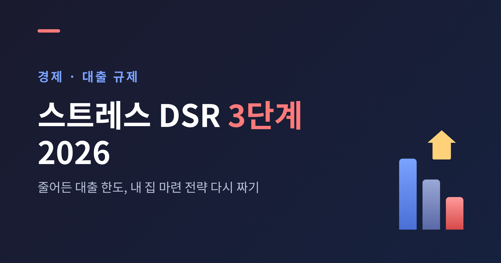
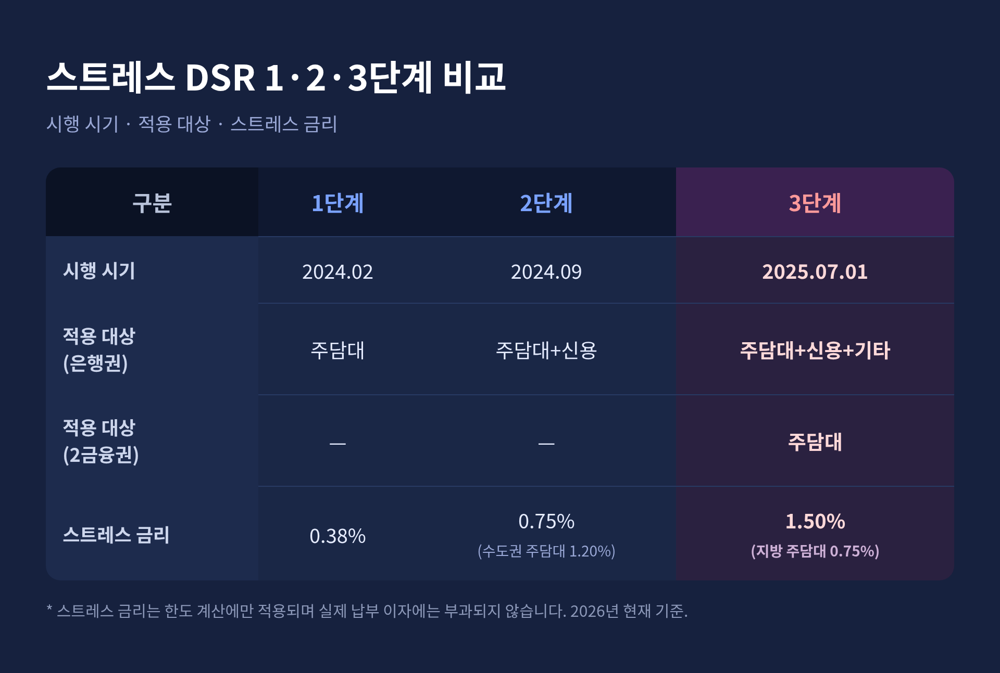
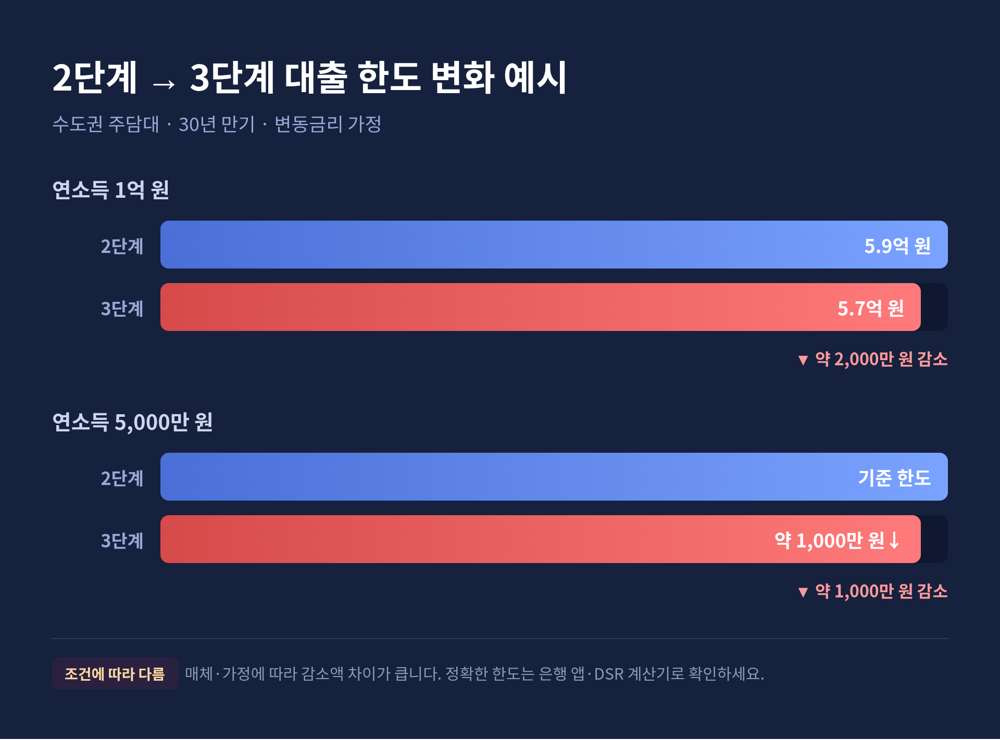

2026년의 내 집 마련은 예전과 셈법이 다릅니다. 2025년 7월부터 스트레스 DSR 3단계가 시행되면서, 같은 소득이어도 빌릴 수 있는 금액이 줄었기 때문입니다.
이번 글에서는 스트레스 DSR 3단계가 무엇이고, 한도가 실제로 얼마나 줄었으며, 실수요자가 전략을 어떻게 다시 짜면 좋을지를 정리해 보겠습니다. 투자나 대출을 권하는 글이 아니라, 제도를 이해하는 데 도움을 드리려는 정보 정리입니다.
먼저 핵심부터 세 줄로 요약하겠습니다.
용어부터 짚고 가겠습니다.
DSR은 총부채원리금상환비율입니다. 내가 가진 모든 대출의 연간 원리금 상환액을 연소득으로 나눈 비율이지요. 연소득 5,000만 원인 사람이 한 해 원금과 이자로 2,000만 원을 갚아야 한다면 DSR은 40%입니다.
규제상 이 비율은 은행권 40%, 비은행권(제2금융권) 50%를 넘을 수 없습니다. 즉 DSR은 소득 대비 빚 갚는 부담을 보는 지표이고, 이 한도 안에서 대출 한도가 정해집니다.
여기에 '스트레스 금리'가 더해진 것이 스트레스 DSR입니다. 스트레스 금리는 앞으로 금리가 오를 가능성을 미리 반영해 얹는 가산금리입니다.
가장 헷갈리는 대목이 여기에 있습니다.
이 가산금리는 한도를 계산할 때만 적용됩니다. 실제로 매달 내는 대출 이자에는 부과되지 않습니다. 그러니 이자가 오르는 게 아니라, "빌릴 수 있는 한도가 줄어드는" 효과가 나타나는 셈입니다.
스트레스 금리는 매년 6월과 12월에, 과거 5년 내 최고 대출금리와 현시점 금리의 차이를 기준으로 산정합니다. 다만 하한과 상한이 정해져 있어, 단계별로 정해진 수준이 적용됩니다.
스트레스 DSR은 한 번에 도입되지 않았습니다. 단계를 밟아 적용 대상과 강도를 키워 왔습니다.

| 구분 | 1단계 | 2단계 | 3단계 |
|---|---|---|---|
| 시행 시기 | 2024년 2월 | 2024년 9월 | 2025년 7월 1일 |
| 적용 대상(은행권) | 주담대 | 주담대 + 신용대출 | 주담대 + 신용 + 기타대출 |
| 적용 대상(2금융권) | - | - | 주담대 |
| 스트레스 금리 | 0.38% | 0.75% (수도권 주담대 1.20%) | 1.50% (지방 주담대는 0.75%) |
처음 1단계는 은행권 주택담보대출에만, 스트레스 금리 0.38%로 가볍게 출발했습니다.
2단계에서는 신용대출까지 대상이 넓어졌고, 가산금리도 0.75%(수도권 주담대는 1.20%)로 올랐습니다.
3단계는 폭이 다릅니다. DSR이 적용되는 사실상 모든 가계대출로 대상이 확대되었습니다. 주택담보대출과 신용대출은 물론 기타대출, 그리고 제2금융권 주담대까지 들어왔습니다. 스트레스 금리도 1.50%로 올라 적용비율 100%가 됩니다. 다만 신용대출은 잔액이 1억 원을 초과하는 경우에만 가산됩니다.
한 가지 짚고 넘어가겠습니다. 일부 요약 자료에서 수도권 3단계 스트레스 금리를 3%로 적은 경우가 보입니다만, 금융위원회 공식 보도자료 기준으로는 1.50%가 정확합니다. 이 글은 2026년 현재의 1.50%를 기준으로 합니다. 정기 재산정으로 수준이 바뀔 수는 있습니다.
2026년 현황에서 가장 중요한 포인트는 지역별 차등입니다.
수도권, 즉 서울·경기·인천은 3단계가 정식으로 적용됩니다. 스트레스 금리 1.50%가 전면 적용되지요.
지방은 사정이 다릅니다. 부동산·건설 경기 침체와 지방 주담대의 가계부채 기여도 감소를 고려해, 3단계 적용이 유예되었습니다. 당초 2025년 12월 말까지 6개월 유예였고, 이후 다시 6개월이 연장되어 2026년 1월부터 6월 30일까지는 2단계(스트레스 금리 0.75%)가 적용됩니다.
그렇다면 2026년 하반기는 어떻게 될까요.
아직 정해지지 않았습니다. 지방 적용 여부는 2026년 6월 중에 다시 결정될 예정입니다. 일정에 따라 셈법이 또 달라질 수 있으니, 지방 실수요자라면 발표를 지켜보시길 권합니다.
고정금리에 대한 우대도 알아 두면 좋습니다. 만기까지 금리가 고정되는 순수 고정금리 대출에는 스트레스 금리가 아예 적용되지 않습니다. 혼합형·주기형 주담대도 고정 기간이 길수록 적용비율이 낮아집니다. 정부가 순수 고정금리 취급을 늘리려는 의도가 담긴 설계입니다.
가장 궁금한 부분일 것입니다. 결론부터 말하면, 조건에 따라 다르되 수천만 원 단위로 줄어듭니다.

금융위원회 시뮬레이션 요약으로는 수도권 주담대 한도가 약 1,000만 원에서 3,000만 원가량 줄어들 것으로 전망됩니다.
구체적 예시도 매체별로 제시되어 있습니다.
여기서 솔직하게 한계를 인정하겠습니다. 같은 가정처럼 보여도 매체마다 감소액 차이가 큽니다. 변동·혼합·주기형 구분, 비교 기준이 되는 단계가 서로 다르기 때문으로 보입니다.
그러니 특정 숫자를 그대로 믿기보다, 경향만 기억하시면 됩니다.
소득이 높을수록, 다시 말해 원래 한도가 클수록 줄어드는 폭도 커집니다. 정확한 내 한도는 은행 앱이나 DSR 계산기로 직접 확인하셔야 합니다.
제도를 이해하려면 배경을 함께 봐야 합니다.
팬데믹 시기 저금리 속에서 가계부채가 빠르게 늘었습니다. 이를 관리하려고 정부가 2024년 2월부터 단계적으로 도입한 것이 스트레스 DSR입니다.
금융위원회는 이 제도를 "금리 인하기에 차주의 대출한도 확대를 제어하는 자동 제어장치"라고 설명합니다. 금리가 내려가 한도가 늘어나려 할 때, 가산금리로 그 증가를 억제하는 구조라는 뜻입니다.
2026년의 금리 환경도 짚어 보겠습니다.
기준금리는 2026년 1월 기준 연 2.50%로 동결 상태입니다. 수도권 주택가격 상승률이 높아 가계부채를 계속 점검할 필요가 있다는 판단에서입니다. 한미 금리차는 2025년 12월 기준 약 1.5%포인트로, 오랜 역전이 이어지며 환율 상승 압력으로 작용하고 있습니다.
예전에는 "금리가 내려가면 한도가 늘겠지" 하는 기대가 통했습니다. 지금은 다릅니다. 금리를 쉽게 내리기 어려운 데다, 설령 내리더라도 스트레스 DSR이 한도 확대를 막습니다.
금리 인하 기대만으로 한도가 크게 늘기는 어려운 환경이라는 점을 염두에 두시면 좋겠습니다.
권하는 말이 아니라, 점검할 거리를 정리해 보겠습니다. 개인 상황에 따라 유불리가 다르므로 구체적 결정은 금융회사 상담을 거치시길 권합니다.
정리하면 이렇습니다.
스트레스 DSR 3단계는 이자를 올리는 제도가 아니라, 빌릴 수 있는 한도를 좁히는 제도입니다. 그래서 더 일찍, 더 차분히 자금 계획을 세운 사람에게 여지가 남습니다.
"한도가 줄어든 시대의 내 집 마련은, 결국 숫자를 미리 들여다본 사람의 몫입니다."
이 글은 정보 정리일 뿐이며, 실제 대출 가능 금액은 금융회사 심사와 시점에 따라 달라집니다. 내 한도를 정확히 알아보겠냐고 물으신다면, 지금 은행 앱부터 한 번 열어 보시길 권하겠습니다.